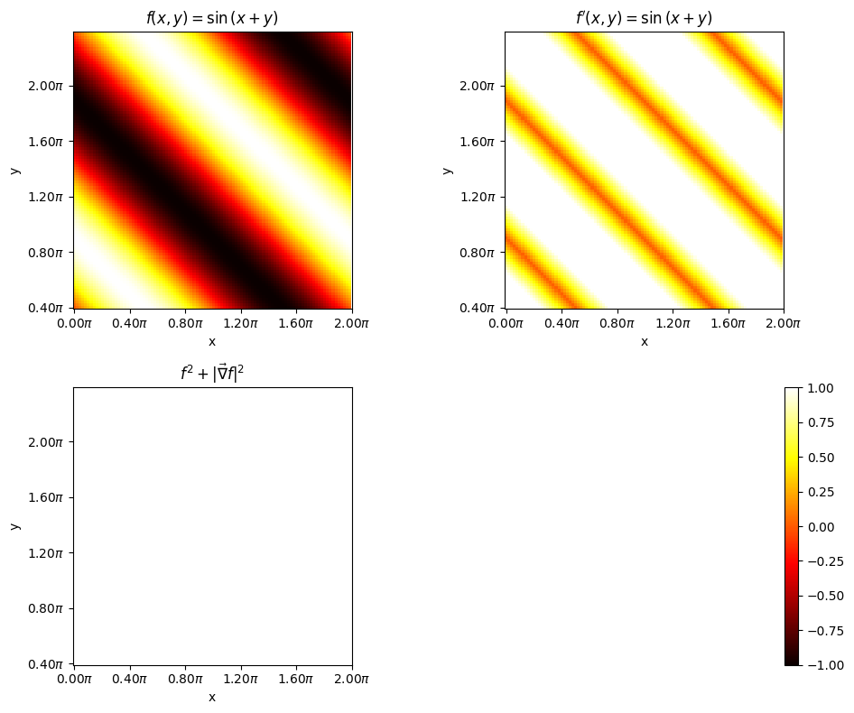
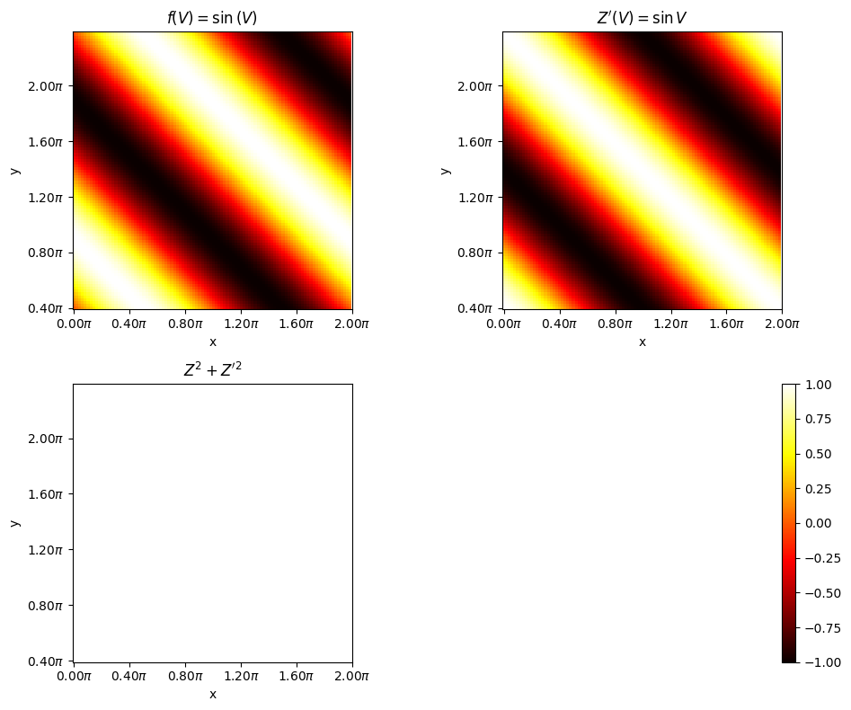
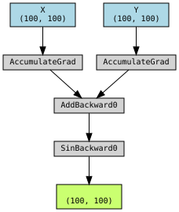
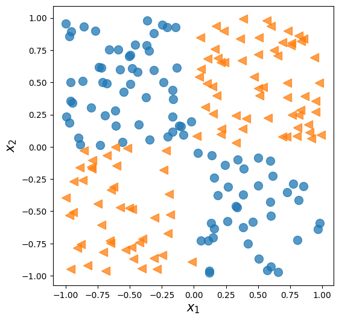
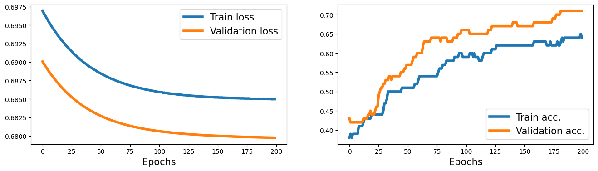
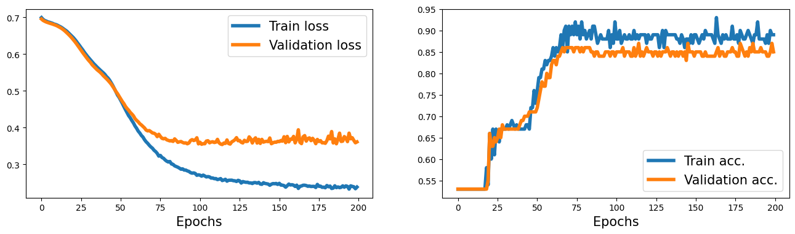
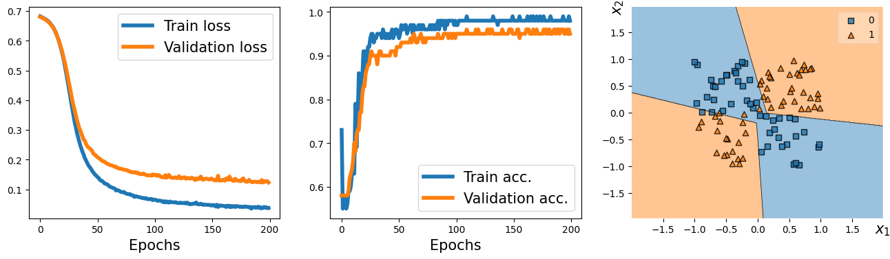
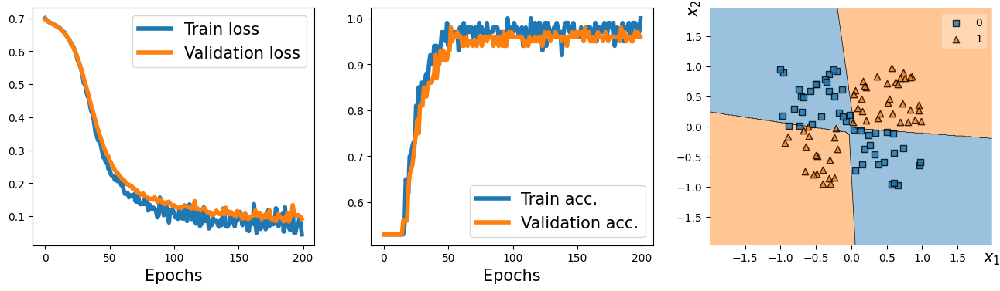

17. PyTorch and Autograd (Continued)#
from IPython.display import Image as IPythonImage
%matplotlib inline
import torch
import numpy as np
import matplotlib.pyplot as plt
# check last lecture, when we introduced the module torch.nn
import torch.nn as nn
print('PyTorch version:', torch.__version__)
device = torch.device("cuda" if torch.cuda.is_available() else "cpu")
print(device)
PyTorch version: 2.5.1+cu124
cpu
%pip install torchviz
Collecting torchviz
Downloading torchviz-0.0.3-py3-none-any.whl.metadata (2.1 kB)
Requirement already satisfied: torch in /usr/local/lib/python3.11/dist-packages (from torchviz) (2.5.1+cu124)
Requirement already satisfied: graphviz in /usr/local/lib/python3.11/dist-packages (from torchviz) (0.20.3)
Requirement already satisfied: filelock in /usr/local/lib/python3.11/dist-packages (from torch->torchviz) (3.17.0)
Requirement already satisfied: typing-extensions>=4.8.0 in /usr/local/lib/python3.11/dist-packages (from torch->torchviz) (4.12.2)
Requirement already satisfied: networkx in /usr/local/lib/python3.11/dist-packages (from torch->torchviz) (3.4.2)
Requirement already satisfied: jinja2 in /usr/local/lib/python3.11/dist-packages (from torch->torchviz) (3.1.5)
Requirement already satisfied: fsspec in /usr/local/lib/python3.11/dist-packages (from torch->torchviz) (2024.10.0)
Collecting nvidia-cuda-nvrtc-cu12==12.4.127 (from torch->torchviz)
Downloading nvidia_cuda_nvrtc_cu12-12.4.127-py3-none-manylinux2014_x86_64.whl.metadata (1.5 kB)
Collecting nvidia-cuda-runtime-cu12==12.4.127 (from torch->torchviz)
Downloading nvidia_cuda_runtime_cu12-12.4.127-py3-none-manylinux2014_x86_64.whl.metadata (1.5 kB)
Collecting nvidia-cuda-cupti-cu12==12.4.127 (from torch->torchviz)
Downloading nvidia_cuda_cupti_cu12-12.4.127-py3-none-manylinux2014_x86_64.whl.metadata (1.6 kB)
Collecting nvidia-cudnn-cu12==9.1.0.70 (from torch->torchviz)
Downloading nvidia_cudnn_cu12-9.1.0.70-py3-none-manylinux2014_x86_64.whl.metadata (1.6 kB)
Collecting nvidia-cublas-cu12==12.4.5.8 (from torch->torchviz)
Downloading nvidia_cublas_cu12-12.4.5.8-py3-none-manylinux2014_x86_64.whl.metadata (1.5 kB)
Collecting nvidia-cufft-cu12==11.2.1.3 (from torch->torchviz)
Downloading nvidia_cufft_cu12-11.2.1.3-py3-none-manylinux2014_x86_64.whl.metadata (1.5 kB)
Collecting nvidia-curand-cu12==10.3.5.147 (from torch->torchviz)
Downloading nvidia_curand_cu12-10.3.5.147-py3-none-manylinux2014_x86_64.whl.metadata (1.5 kB)
Collecting nvidia-cusolver-cu12==11.6.1.9 (from torch->torchviz)
Downloading nvidia_cusolver_cu12-11.6.1.9-py3-none-manylinux2014_x86_64.whl.metadata (1.6 kB)
Collecting nvidia-cusparse-cu12==12.3.1.170 (from torch->torchviz)
Downloading nvidia_cusparse_cu12-12.3.1.170-py3-none-manylinux2014_x86_64.whl.metadata (1.6 kB)
Requirement already satisfied: nvidia-nccl-cu12==2.21.5 in /usr/local/lib/python3.11/dist-packages (from torch->torchviz) (2.21.5)
Requirement already satisfied: nvidia-nvtx-cu12==12.4.127 in /usr/local/lib/python3.11/dist-packages (from torch->torchviz) (12.4.127)
Collecting nvidia-nvjitlink-cu12==12.4.127 (from torch->torchviz)
Downloading nvidia_nvjitlink_cu12-12.4.127-py3-none-manylinux2014_x86_64.whl.metadata (1.5 kB)
Requirement already satisfied: triton==3.1.0 in /usr/local/lib/python3.11/dist-packages (from torch->torchviz) (3.1.0)
Requirement already satisfied: sympy==1.13.1 in /usr/local/lib/python3.11/dist-packages (from torch->torchviz) (1.13.1)
Requirement already satisfied: mpmath<1.4,>=1.1.0 in /usr/local/lib/python3.11/dist-packages (from sympy==1.13.1->torch->torchviz) (1.3.0)
Requirement already satisfied: MarkupSafe>=2.0 in /usr/local/lib/python3.11/dist-packages (from jinja2->torch->torchviz) (3.0.2)
Downloading torchviz-0.0.3-py3-none-any.whl (5.7 kB)
Downloading nvidia_cublas_cu12-12.4.5.8-py3-none-manylinux2014_x86_64.whl (363.4 MB)
━━━━━━━━━━━━━━━━━━━━━━━━━━━━━━━━━━━━━━━━ 363.4/363.4 MB 4.2 MB/s eta 0:00:00
?25hDownloading nvidia_cuda_cupti_cu12-12.4.127-py3-none-manylinux2014_x86_64.whl (13.8 MB)
━━━━━━━━━━━━━━━━━━━━━━━━━━━━━━━━━━━━━━━━ 13.8/13.8 MB 70.1 MB/s eta 0:00:00
?25hDownloading nvidia_cuda_nvrtc_cu12-12.4.127-py3-none-manylinux2014_x86_64.whl (24.6 MB)
━━━━━━━━━━━━━━━━━━━━━━━━━━━━━━━━━━━━━━━━ 24.6/24.6 MB 75.3 MB/s eta 0:00:00
?25hDownloading nvidia_cuda_runtime_cu12-12.4.127-py3-none-manylinux2014_x86_64.whl (883 kB)
━━━━━━━━━━━━━━━━━━━━━━━━━━━━━━━━━━━━━━━━ 883.7/883.7 kB 48.0 MB/s eta 0:00:00
?25hDownloading nvidia_cudnn_cu12-9.1.0.70-py3-none-manylinux2014_x86_64.whl (664.8 MB)
━━━━━━━━━━━━━━━━━━━━━━━━━━━━━━━━━━━━━━━━ 664.8/664.8 MB 1.3 MB/s eta 0:00:00
?25hDownloading nvidia_cufft_cu12-11.2.1.3-py3-none-manylinux2014_x86_64.whl (211.5 MB)
━━━━━━━━━━━━━━━━━━━━━━━━━━━━━━━━━━━━━━━━ 211.5/211.5 MB 6.1 MB/s eta 0:00:00
?25hDownloading nvidia_curand_cu12-10.3.5.147-py3-none-manylinux2014_x86_64.whl (56.3 MB)
━━━━━━━━━━━━━━━━━━━━━━━━━━━━━━━━━━━━━━━━ 56.3/56.3 MB 11.7 MB/s eta 0:00:00
?25hDownloading nvidia_cusolver_cu12-11.6.1.9-py3-none-manylinux2014_x86_64.whl (127.9 MB)
━━━━━━━━━━━━━━━━━━━━━━━━━━━━━━━━━━━━━━━━ 127.9/127.9 MB 4.9 MB/s eta 0:00:00
?25hDownloading nvidia_cusparse_cu12-12.3.1.170-py3-none-manylinux2014_x86_64.whl (207.5 MB)
━━━━━━━━━━━━━━━━━━━━━━━━━━━━━━━━━━━━━━━━ 207.5/207.5 MB 6.2 MB/s eta 0:00:00
?25hDownloading nvidia_nvjitlink_cu12-12.4.127-py3-none-manylinux2014_x86_64.whl (21.1 MB)
━━━━━━━━━━━━━━━━━━━━━━━━━━━━━━━━━━━━━━━━ 21.1/21.1 MB 79.8 MB/s eta 0:00:00
?25hInstalling collected packages: nvidia-nvjitlink-cu12, nvidia-curand-cu12, nvidia-cufft-cu12, nvidia-cuda-runtime-cu12, nvidia-cuda-nvrtc-cu12, nvidia-cuda-cupti-cu12, nvidia-cublas-cu12, nvidia-cusparse-cu12, nvidia-cudnn-cu12, nvidia-cusolver-cu12, torchviz
Attempting uninstall: nvidia-nvjitlink-cu12
Found existing installation: nvidia-nvjitlink-cu12 12.5.82
Uninstalling nvidia-nvjitlink-cu12-12.5.82:
Successfully uninstalled nvidia-nvjitlink-cu12-12.5.82
Attempting uninstall: nvidia-curand-cu12
Found existing installation: nvidia-curand-cu12 10.3.6.82
Uninstalling nvidia-curand-cu12-10.3.6.82:
Successfully uninstalled nvidia-curand-cu12-10.3.6.82
Attempting uninstall: nvidia-cufft-cu12
Found existing installation: nvidia-cufft-cu12 11.2.3.61
Uninstalling nvidia-cufft-cu12-11.2.3.61:
Successfully uninstalled nvidia-cufft-cu12-11.2.3.61
Attempting uninstall: nvidia-cuda-runtime-cu12
Found existing installation: nvidia-cuda-runtime-cu12 12.5.82
Uninstalling nvidia-cuda-runtime-cu12-12.5.82:
Successfully uninstalled nvidia-cuda-runtime-cu12-12.5.82
Attempting uninstall: nvidia-cuda-nvrtc-cu12
Found existing installation: nvidia-cuda-nvrtc-cu12 12.5.82
Uninstalling nvidia-cuda-nvrtc-cu12-12.5.82:
Successfully uninstalled nvidia-cuda-nvrtc-cu12-12.5.82
Attempting uninstall: nvidia-cuda-cupti-cu12
Found existing installation: nvidia-cuda-cupti-cu12 12.5.82
Uninstalling nvidia-cuda-cupti-cu12-12.5.82:
Successfully uninstalled nvidia-cuda-cupti-cu12-12.5.82
Attempting uninstall: nvidia-cublas-cu12
Found existing installation: nvidia-cublas-cu12 12.5.3.2
Uninstalling nvidia-cublas-cu12-12.5.3.2:
Successfully uninstalled nvidia-cublas-cu12-12.5.3.2
Attempting uninstall: nvidia-cusparse-cu12
Found existing installation: nvidia-cusparse-cu12 12.5.1.3
Uninstalling nvidia-cusparse-cu12-12.5.1.3:
Successfully uninstalled nvidia-cusparse-cu12-12.5.1.3
Attempting uninstall: nvidia-cudnn-cu12
Found existing installation: nvidia-cudnn-cu12 9.3.0.75
Uninstalling nvidia-cudnn-cu12-9.3.0.75:
Successfully uninstalled nvidia-cudnn-cu12-9.3.0.75
Attempting uninstall: nvidia-cusolver-cu12
Found existing installation: nvidia-cusolver-cu12 11.6.3.83
Uninstalling nvidia-cusolver-cu12-11.6.3.83:
Successfully uninstalled nvidia-cusolver-cu12-11.6.3.83
Successfully installed nvidia-cublas-cu12-12.4.5.8 nvidia-cuda-cupti-cu12-12.4.127 nvidia-cuda-nvrtc-cu12-12.4.127 nvidia-cuda-runtime-cu12-12.4.127 nvidia-cudnn-cu12-9.1.0.70 nvidia-cufft-cu12-11.2.1.3 nvidia-curand-cu12-10.3.5.147 nvidia-cusolver-cu12-11.6.1.9 nvidia-cusparse-cu12-12.3.1.170 nvidia-nvjitlink-cu12-12.4.127 torchviz-0.0.3
17.1. Can you perhaps extend this to 2D function in x and y#
Consider the equation
where \(x,y \in [0., 2\pi]\)
This can be broken down to
In autograd the tensors x and y are called as leaves. During the forward pass, if the argument requires_grad is set to true, then derivates corresponding to each operations performed using the variable will be traced. This is true for intermediate leaf like the varible v as well. But storing the trace can be turned on or off by the argument retain_grad. Follow the blog pytorch-autograd-engine for more information
One can verify if all works by doing the following $$
import numpy as np
import matplotlib.pyplot as plt
import torch
tkwargs = {'dtype': torch.float,
'device': torch.device('cuda' if torch.cuda.is_available() else 'cpu')
}
# create a linspace in x from -5 to 5
x = torch.linspace(0., 2*torch.pi, 100, requires_grad=False, **tkwargs)
y = torch.linspace(0., 2*torch.pi, 100, requires_grad=False, **tkwargs)
X, Y = torch.meshgrid(x, y, indexing = "xy")
X.requires_grad = True
Y.requires_grad = True
V = X + Y
V.retain_grad()
Z = torch.sin(V)
Z.retain_grad()
# Lets compute the gradients
Z.backward(torch.ones_like(Z))
# switch off tracing
with torch.no_grad():
dz_dx = X.grad
dz_dy = Y.grad
# plot imshow first
fig, axes = plt.subplots(2, 2, figsize=(10, 8))
# normalize color to -1 to 1
f = axes[0, 0].imshow(Z.cpu().numpy(), cmap='hot', vmin=-1, vmax=1, origin = "lower")
axes[0, 0].set_title(r"$f(x, y) = \sin{(x+y)}$")
axes[0, 0].set_xlabel('x')
axes[0, 0].set_ylabel('y')
# set axis labels to go from 0 to 2pi
axes[0, 0].set_xticks(np.linspace(0., 100., 6))
axes[0, 0].set_xticklabels([f"{i:.2f}" + r"$\pi$" for i in np.linspace(0., 2., 6)])
axes[0, 0].set_xticks(np.linspace(0., 100., 6))
axes[0, 0].set_yticklabels([f"{i:.2f}" + r"$\pi$" for i in np.linspace(0., 2., 6)])
# compute zprime = dz_dx + dz_dy
Zprime = torch.sqrt(dz_dx**2 + dz_dy**2)
zprme = axes[0, 1].imshow(Zprime.cpu().numpy(), cmap = 'hot', vmin = -1, vmax = 1, origin = "lower")
axes[0, 1].set_title(r"$f^{\prime}(x, y) = \sin{(x+y)}$")
axes[0, 1].set_xlabel('x')
axes[0, 1].set_ylabel('y')
# set axis labels to go from 0 to 2pi
axes[0, 1].set_xticks(np.linspace(0., 100., 6))
axes[0, 1].set_xticklabels([f"{i:.2f}" + r"$\pi$" for i in np.linspace(0., 2., 6)])
axes[0, 1].set_xticks(np.linspace(0., 100., 6))
axes[0, 1].set_yticklabels([f"{i:.2f}" + r"$\pi$" for i in np.linspace(0., 2., 6)])
# compute z**2 + 1/4 z**2'
added = Z**2 + (1/2.)*Zprime**2
axes[1, 0].imshow(added.cpu().numpy(), cmap = 'hot', vmin = -1, vmax = 1, origin = "lower")
axes[1, 0].set_title(r"$f^{2} + |\vec{\nabla} f|^{2}$")
axes[1, 0].set_xlabel('x')
axes[1, 0].set_ylabel('y')
# set axis labels to go from 0 to 2pi
axes[1, 0].set_xticks(np.linspace(0., 100., 6))
axes[1, 0].set_xticklabels([f"{i:.2f}" + r"$\pi$" for i in np.linspace(0., 2., 6)])
axes[1, 0].set_xticks(np.linspace(0., 100., 6))
axes[1, 0].set_yticklabels([f"{i:.2f}" + r"$\pi$" for i in np.linspace(0., 2., 6)])
#place the color bar on the top of the figure not wihtin any subplots
axes[1, 1].set_axis_off()
fig.colorbar(zprme, ax = axes[1, 1], orientation = "vertical")
plt.tight_layout()
plt.show()
<ipython-input-7-293248364fa6>:39: UserWarning: set_ticklabels() should only be used with a fixed number of ticks, i.e. after set_ticks() or using a FixedLocator.
axes[0, 0].set_yticklabels([f"{i:.2f}" + r"$\pi$" for i in np.linspace(0., 2., 6)])
<ipython-input-7-293248364fa6>:51: UserWarning: set_ticklabels() should only be used with a fixed number of ticks, i.e. after set_ticks() or using a FixedLocator.
axes[0, 1].set_yticklabels([f"{i:.2f}" + r"$\pi$" for i in np.linspace(0., 2., 6)])
<ipython-input-7-293248364fa6>:63: UserWarning: set_ticklabels() should only be used with a fixed number of ticks, i.e. after set_ticks() or using a FixedLocator.
axes[1, 0].set_yticklabels([f"{i:.2f}" + r"$\pi$" for i in np.linspace(0., 2., 6)])

If \(V = X+Y\) then,
Hence
#@title $Z^{2} + Z^{\prime 2} = 1$
# switch off tracing
with torch.no_grad():
dz_dx = X.grad
dz_dy = Y.grad
# plot imshow first
fig, axes = plt.subplots(2, 2, figsize=(10, 8))
# normalize color to -1 to 1
f = axes[0, 0].imshow(Z.cpu().numpy(), cmap='hot', vmin=-1, vmax=1, origin = "lower")
axes[0, 0].set_title(r"$f(V) = \sin{(V)}$")
axes[0, 0].set_xlabel('x')
axes[0, 0].set_ylabel('y')
# set axis labels to go from 0 to 2pi
axes[0, 0].set_xticks(np.linspace(0., 100., 6))
axes[0, 0].set_xticklabels([f"{i:.2f}" + r"$\pi$" for i in np.linspace(0., 2., 6)])
axes[0, 0].set_xticks(np.linspace(0., 100., 6))
axes[0, 0].set_yticklabels([f"{i:.2f}" + r"$\pi$" for i in np.linspace(0., 2., 6)])
# compute zprime = dz_dx + dz_dy
dz_dv = V.grad
zprme = axes[0, 1].imshow(dz_dv.cpu().numpy(), cmap = 'hot', vmin = -1, vmax = 1, origin = "lower")
axes[0, 1].set_title(r"$Z^{\prime}(V) = \sin{V}$")
axes[0, 1].set_xlabel('x')
axes[0, 1].set_ylabel('y')
# set axis labels to go from 0 to 2pi
axes[0, 1].set_xticks(np.linspace(0., 100., 6))
axes[0, 1].set_xticklabels([f"{i:.2f}" + r"$\pi$" for i in np.linspace(0., 2., 6)])
axes[0, 1].set_xticks(np.linspace(0., 100., 6))
axes[0, 1].set_yticklabels([f"{i:.2f}" + r"$\pi$" for i in np.linspace(0., 2., 6)])
# compute z**2 + 1/4 z**2'
added = Z**2 + Zprime**2
axes[1, 0].imshow(added.cpu().numpy(), cmap = 'hot', vmin = -1, vmax = 1, origin = "lower")
axes[1, 0].set_title(r"$Z^{2} + Z^{\prime 2}$")
axes[1, 0].set_xlabel('x')
axes[1, 0].set_ylabel('y')
# set axis labels to go from 0 to 2pi
axes[1, 0].set_xticks(np.linspace(0., 100., 6))
axes[1, 0].set_xticklabels([f"{i:.2f}" + r"$\pi$" for i in np.linspace(0., 2., 6)])
axes[1, 0].set_xticks(np.linspace(0., 100., 6))
axes[1, 0].set_yticklabels([f"{i:.2f}" + r"$\pi$" for i in np.linspace(0., 2., 6)])
#place the color bar on the top of the figure not wihtin any subplots
axes[1, 1].set_axis_off()
fig.colorbar(zprme, ax = axes[1, 1], orientation = "vertical")
plt.tight_layout()
plt.show()
<ipython-input-8-5f9c4e8aec3a>:18: UserWarning: set_ticklabels() should only be used with a fixed number of ticks, i.e. after set_ticks() or using a FixedLocator.
axes[0, 0].set_yticklabels([f"{i:.2f}" + r"$\pi$" for i in np.linspace(0., 2., 6)])
<ipython-input-8-5f9c4e8aec3a>:30: UserWarning: set_ticklabels() should only be used with a fixed number of ticks, i.e. after set_ticks() or using a FixedLocator.
axes[0, 1].set_yticklabels([f"{i:.2f}" + r"$\pi$" for i in np.linspace(0., 2., 6)])
<ipython-input-8-5f9c4e8aec3a>:42: UserWarning: set_ticklabels() should only be used with a fixed number of ticks, i.e. after set_ticks() or using a FixedLocator.
axes[1, 0].set_yticklabels([f"{i:.2f}" + r"$\pi$" for i in np.linspace(0., 2., 6)])

import torchviz
torchviz.make_dot(Z, {'X': X, 'Y': Y, 'V': V})

17.2. Simplifying implementations via the torch.nn module and models based on nn.Sequential#
model = nn.Sequential(
nn.Linear(4, 16),
nn.ReLU(),
nn.Linear(16, 32),
nn.ReLU()
)
model
Sequential(
(0): Linear(in_features=4, out_features=16, bias=True)
(1): ReLU()
(2): Linear(in_features=16, out_features=32, bias=True)
(3): ReLU()
)
17.2.1. Configuring layers#
Initializers
nn.init: https://pytorch.org/docs/stable/nn.init.htmlL1 Regularizers
nn.L1Loss: https://pytorch.org/docs/stable/generated/torch.nn.L1Loss.html#torch.nn.L1LossL2 Regularizers
weight_decay: https://pytorch.org/docs/stable/optim.htmlActivations: https://pytorch.org/docs/stable/nn.html#non-linear-activations-weighted-sum-nonlinearity
nn.init.xavier_uniform_(model[0].weight)
l1_weight = 0.01
l1_penalty = l1_weight * model[2].weight.abs().sum()
17.2.2. Compiling a model#
Optimizers
torch.optim: https://pytorch.org/docs/stable/optim.html#algorithmsLoss Functions
tf.keras.losses: https://pytorch.org/docs/stable/nn.html#loss-functions
loss_fn = nn.BCELoss()
optimizer = torch.optim.SGD(model.parameters(), lr=0.001)
17.3. Effect of zeroing out gradients#
import torch
# Define a simple linear model: y = wx
w = torch.tensor([2.0], requires_grad=True) # Initialize weight w
x = torch.tensor([1.0]) # Input value
y_true = torch.tensor([4.0]) # True value (target)
# Define a learning rate
learning_rate = 0.1
# Optimizer (Gradient Descent)
optimizer = torch.optim.SGD([w], lr=learning_rate)
# Define a simple Mean Squared Error (MSE) loss function
def loss_fn(y_pred, y_true):
return (y_pred - y_true).pow(2).mean()
# Step 1: Forward pass and loss computation
y_pred = w * x
loss = loss_fn(y_pred, y_true)
# Backward pass (compute gradients)
loss.backward()
print(f"Gradients after step 1: {w.grad}")
# Step 2: Update weights without zeroing gradients
optimizer.step() # This updates w using the gradient
# Forward pass again after the update
y_pred = w * x
loss = loss_fn(y_pred, y_true)
# Compute new gradients
loss.backward()
print(f"Gradients after step 2 without zeroing: {w.grad}")
Gradients after step 1: tensor([-4.])
Gradients after step 2 without zeroing: tensor([-7.2000])
# Now lets do it the right way
# Reset the weight and gradient
w = torch.tensor([2.0], requires_grad=True)
optimizer = torch.optim.SGD([w], lr=learning_rate)
# Step 1: Forward pass and loss computation
y_pred = w * x
loss = loss_fn(y_pred, y_true)
loss.backward()
print(f"Gradients after step 1: {w.grad}")
# Update weights
optimizer.step()
# Zero the gradients
optimizer.zero_grad()
# Step 2: Forward pass again after zeroing
y_pred = w * x
loss = loss_fn(y_pred, y_true)
loss.backward()
print(f"Gradients after step 2 with zeroing: {w.grad}")
Gradients after step 1: tensor([-4.])
Gradients after step 2 with zeroing: tensor([-3.2000])
17.4. Solving an XOR classification problem#
import numpy as np
import matplotlib.pyplot as plt
%matplotlib inline
np.random.seed(1)
torch.manual_seed(1)
x = np.random.uniform(low=-1, high=1, size=(200, 2))
y = np.ones(len(x))
y[x[:, 0] * x[:, 1]<0] = 0
n_train = 100
x_train = torch.tensor(x[:n_train, :], dtype=torch.float32)
y_train = torch.tensor(y[:n_train], dtype=torch.float32)
x_valid = torch.tensor(x[n_train:, :], dtype=torch.float32)
y_valid = torch.tensor(y[n_train:], dtype=torch.float32)
fig = plt.figure(figsize=(6, 6))
plt.plot(x[y==0, 0],
x[y==0, 1], 'o', alpha=0.75, markersize=10)
plt.plot(x[y==1, 0],
x[y==1, 1], '<', alpha=0.75, markersize=10)
plt.xlabel(r'$x_1$', size=15)
plt.ylabel(r'$x_2$', size=15)
#plt.savefig('figures/13_02.png', dpi=300)
plt.show()

from torch.utils.data import DataLoader, TensorDataset
train_ds = TensorDataset(x_train, y_train)
batch_size = 2
torch.manual_seed(1)
train_dl = DataLoader(train_ds, batch_size, shuffle=True)
model = nn.Sequential(
nn.Linear(2, 1),
nn.Sigmoid()
)
model
Sequential(
(0): Linear(in_features=2, out_features=1, bias=True)
(1): Sigmoid()
)
loss_fn = nn.BCELoss()
optimizer = torch.optim.SGD(model.parameters(), lr=0.001)
torch.manual_seed(1)
num_epochs = 200
def train(model, num_epochs, train_dl, x_valid, y_valid):
loss_hist_train = [0] * num_epochs
accuracy_hist_train = [0] * num_epochs
loss_hist_valid = [0] * num_epochs
accuracy_hist_valid = [0] * num_epochs
for epoch in range(num_epochs):
for x_batch, y_batch in train_dl:
pred = model(x_batch)[:, 0]
loss = loss_fn(pred, y_batch)
loss.backward()
optimizer.step()
optimizer.zero_grad()
loss_hist_train[epoch] += loss.item()
is_correct = ((pred>=0.5).float() == y_batch).float()
accuracy_hist_train[epoch] += is_correct.mean()
loss_hist_train[epoch] /= n_train/batch_size
accuracy_hist_train[epoch] /= n_train/batch_size
pred = model(x_valid)[:, 0]
loss = loss_fn(pred, y_valid)
loss_hist_valid[epoch] = loss.item()
is_correct = ((pred>=0.5).float() == y_valid).float()
accuracy_hist_valid[epoch] += is_correct.mean()
return loss_hist_train, loss_hist_valid, accuracy_hist_train, accuracy_hist_valid
history = train(model, num_epochs, train_dl, x_valid, y_valid)
fig = plt.figure(figsize=(16, 4))
ax = fig.add_subplot(1, 2, 1)
plt.plot(history[0], lw=4)
plt.plot(history[1], lw=4)
plt.legend(['Train loss', 'Validation loss'], fontsize=15)
ax.set_xlabel('Epochs', size=15)
ax = fig.add_subplot(1, 2, 2)
plt.plot(history[2], lw=4)
plt.plot(history[3], lw=4)
plt.legend(['Train acc.', 'Validation acc.'], fontsize=15)
ax.set_xlabel('Epochs', size=15)
Text(0.5, 0, 'Epochs')

model = nn.Sequential(
nn.Linear(2, 4),
nn.ReLU(),
nn.Linear(4, 4),
nn.ReLU(),
nn.Linear(4, 1),
nn.Sigmoid()
)
loss_fn = nn.BCELoss()
optimizer = torch.optim.SGD(model.parameters(), lr=0.015)
model
Sequential(
(0): Linear(in_features=2, out_features=4, bias=True)
(1): ReLU()
(2): Linear(in_features=4, out_features=4, bias=True)
(3): ReLU()
(4): Linear(in_features=4, out_features=1, bias=True)
(5): Sigmoid()
)
history = train(model, num_epochs, train_dl, x_valid, y_valid)
fig = plt.figure(figsize=(16, 4))
ax = fig.add_subplot(1, 2, 1)
plt.plot(history[0], lw=4)
plt.plot(history[1], lw=4)
plt.legend(['Train loss', 'Validation loss'], fontsize=15)
ax.set_xlabel('Epochs', size=15)
ax = fig.add_subplot(1, 2, 2)
plt.plot(history[2], lw=4)
plt.plot(history[3], lw=4)
plt.legend(['Train acc.', 'Validation acc.'], fontsize=15)
ax.set_xlabel('Epochs', size=15)
#plt.savefig('figures/13_04.png', dpi=300)
Text(0.5, 0, 'Epochs')

17.5. Making model building more flexible with nn.Module#
class MyModule(nn.Module):
def __init__(self):
super().__init__()
l1 = nn.Linear(2, 4)
a1 = nn.ReLU()
l2 = nn.Linear(4, 4)
a2 = nn.ReLU()
l3 = nn.Linear(4, 1)
a3 = nn.Sigmoid()
l = [l1, a1, l2, a2, l3, a3]
self.module_list = nn.ModuleList(l)
def forward(self, x):
for f in self.module_list:
x = f(x)
return x
def predict(self, x):
x = torch.tensor(x, dtype=torch.float32)
pred = self.forward(x)[:, 0]
return (pred>=0.5).float()
model = MyModule()
model
MyModule(
(module_list): ModuleList(
(0): Linear(in_features=2, out_features=4, bias=True)
(1): ReLU()
(2): Linear(in_features=4, out_features=4, bias=True)
(3): ReLU()
(4): Linear(in_features=4, out_features=1, bias=True)
(5): Sigmoid()
)
)
loss_fn = nn.BCELoss()
optimizer = torch.optim.SGD(model.parameters(), lr=0.015)
# torch.manual_seed(1)
history = train(model, num_epochs, train_dl, x_valid, y_valid)
from mlxtend.plotting import plot_decision_regions # replacing the plot_decision function used in previous lectures
fig = plt.figure(figsize=(16, 4))
ax = fig.add_subplot(1, 3, 1)
plt.plot(history[0], lw=4)
plt.plot(history[1], lw=4)
plt.legend(['Train loss', 'Validation loss'], fontsize=15)
ax.set_xlabel('Epochs', size=15)
ax = fig.add_subplot(1, 3, 2)
plt.plot(history[2], lw=4)
plt.plot(history[3], lw=4)
plt.legend(['Train acc.', 'Validation acc.'], fontsize=15)
ax.set_xlabel('Epochs', size=15)
ax = fig.add_subplot(1, 3, 3)
plot_decision_regions(X=x_valid.numpy(),
y=y_valid.numpy().astype(np.int64),
clf=model)
ax.set_xlabel(r'$x_1$', size=15)
ax.xaxis.set_label_coords(1, -0.025)
ax.set_ylabel(r'$x_2$', size=15)
ax.yaxis.set_label_coords(-0.025, 1)
#plt.savefig('figures/13_05.png', dpi=300)
plt.show()

17.6. Writing custom layers in PyTorch#
class NoisyLinear(nn.Module):
def __init__(self, input_size, output_size, noise_stddev=0.1):
super().__init__()
w = torch.Tensor(input_size, output_size)
self.w = nn.Parameter(w) # nn.Parameter is a Tensor that's a module parameter.
nn.init.xavier_uniform_(self.w)
b = torch.Tensor(output_size).fill_(0)
self.b = nn.Parameter(b)
self.noise_stddev = noise_stddev
def forward(self, x, training=False):
if training:
noise = torch.normal(0.0, self.noise_stddev, x.shape)
x_new = torch.add(x, noise)
else:
x_new = x
return torch.add(torch.mm(x_new, self.w), self.b)
## testing:
torch.manual_seed(1)
noisy_layer = NoisyLinear(4, 2)
x = torch.zeros((1, 4))
print(noisy_layer(x, training=True))
print(noisy_layer(x, training=True))
print(noisy_layer(x, training=False))
tensor([[ 0.1154, -0.0598]], grad_fn=<AddBackward0>)
tensor([[ 0.0432, -0.0375]], grad_fn=<AddBackward0>)
tensor([[0., 0.]], grad_fn=<AddBackward0>)
class MyNoisyModule(nn.Module):
def __init__(self):
super().__init__()
self.l1 = NoisyLinear(2, 4, 0.07)
self.a1 = nn.ReLU()
self.l2 = nn.Linear(4, 4)
self.a2 = nn.ReLU()
self.l3 = nn.Linear(4, 1)
self.a3 = nn.Sigmoid()
def forward(self, x, training=False):
x = self.l1(x, training)
x = self.a1(x)
x = self.l2(x)
x = self.a2(x)
x = self.l3(x)
x = self.a3(x)
return x
def predict(self, x):
x = torch.tensor(x, dtype=torch.float32)
pred = self.forward(x)[:, 0]
return (pred>=0.5).float()
torch.manual_seed(1)
model = MyNoisyModule()
model
MyNoisyModule(
(l1): NoisyLinear()
(a1): ReLU()
(l2): Linear(in_features=4, out_features=4, bias=True)
(a2): ReLU()
(l3): Linear(in_features=4, out_features=1, bias=True)
(a3): Sigmoid()
)
loss_fn = nn.BCELoss()
optimizer = torch.optim.SGD(model.parameters(), lr=0.015)
torch.manual_seed(1)
loss_hist_train = [0] * num_epochs
accuracy_hist_train = [0] * num_epochs
loss_hist_valid = [0] * num_epochs
accuracy_hist_valid = [0] * num_epochs
for epoch in range(num_epochs):
for x_batch, y_batch in train_dl:
pred = model(x_batch, True)[:, 0]
loss = loss_fn(pred, y_batch)
loss.backward()
optimizer.step()
optimizer.zero_grad()
loss_hist_train[epoch] += loss.item()
is_correct = ((pred>=0.5).float() == y_batch).float()
accuracy_hist_train[epoch] += is_correct.mean()
loss_hist_train[epoch] /= n_train/batch_size
accuracy_hist_train[epoch] /= n_train/batch_size
pred = model(x_valid)[:, 0]
loss = loss_fn(pred, y_valid)
loss_hist_valid[epoch] = loss.item()
is_correct = ((pred>=0.5).float() == y_valid).float()
accuracy_hist_valid[epoch] += is_correct.mean()
from mlxtend.plotting import plot_decision_regions
fig = plt.figure(figsize=(16, 4))
ax = fig.add_subplot(1, 3, 1)
plt.plot(loss_hist_train, lw=4)
plt.plot(loss_hist_valid, lw=4)
plt.legend(['Train loss', 'Validation loss'], fontsize=15)
ax.set_xlabel('Epochs', size=15)
ax = fig.add_subplot(1, 3, 2)
plt.plot(accuracy_hist_train, lw=4)
plt.plot(accuracy_hist_valid, lw=4)
plt.legend(['Train acc.', 'Validation acc.'], fontsize=15)
ax.set_xlabel('Epochs', size=15)
ax = fig.add_subplot(1, 3, 3)
plot_decision_regions(X=x_valid.numpy(),
y=y_valid.numpy().astype(np.int64),
clf=model)
ax.set_xlabel(r'$x_1$', size=15)
ax.xaxis.set_label_coords(1, -0.025)
ax.set_ylabel(r'$x_2$', size=15)
ax.yaxis.set_label_coords(-0.025, 1)
plt.show()

17.7. Example 2 - lassifying MNIST hand-written digits#
import torchvision
from torchvision import transforms # used for data preprocessing and augmentation
import torch
from torch.utils.data import DataLoader
from torch import nn
image_path = './'
transform = transforms.Compose([transforms.ToTensor()]) # transforms the images to tensors
mnist_train_dataset = torchvision.datasets.MNIST(root=image_path,
train=True,
transform=transform,
download=True)
mnist_test_dataset = torchvision.datasets.MNIST(root=image_path,
train=False,
transform=transform,
download=False)
batch_size = 64
torch.manual_seed(1)
train_dl = DataLoader(mnist_train_dataset, batch_size, shuffle=True)
Downloading http://yann.lecun.com/exdb/mnist/train-images-idx3-ubyte.gz
Failed to download (trying next):
HTTP Error 404: Not Found
Downloading https://ossci-datasets.s3.amazonaws.com/mnist/train-images-idx3-ubyte.gz
Downloading https://ossci-datasets.s3.amazonaws.com/mnist/train-images-idx3-ubyte.gz to ./MNIST/raw/train-images-idx3-ubyte.gz
100%|██████████| 9.91M/9.91M [00:00<00:00, 11.4MB/s]
Extracting ./MNIST/raw/train-images-idx3-ubyte.gz to ./MNIST/raw
Downloading http://yann.lecun.com/exdb/mnist/train-labels-idx1-ubyte.gz
Failed to download (trying next):
HTTP Error 404: Not Found
Downloading https://ossci-datasets.s3.amazonaws.com/mnist/train-labels-idx1-ubyte.gz
Downloading https://ossci-datasets.s3.amazonaws.com/mnist/train-labels-idx1-ubyte.gz to ./MNIST/raw/train-labels-idx1-ubyte.gz
100%|██████████| 28.9k/28.9k [00:00<00:00, 342kB/s]
Extracting ./MNIST/raw/train-labels-idx1-ubyte.gz to ./MNIST/raw
Downloading http://yann.lecun.com/exdb/mnist/t10k-images-idx3-ubyte.gz
Failed to download (trying next):
HTTP Error 404: Not Found
Downloading https://ossci-datasets.s3.amazonaws.com/mnist/t10k-images-idx3-ubyte.gz
Downloading https://ossci-datasets.s3.amazonaws.com/mnist/t10k-images-idx3-ubyte.gz to ./MNIST/raw/t10k-images-idx3-ubyte.gz
100%|██████████| 1.65M/1.65M [00:00<00:00, 3.20MB/s]
Extracting ./MNIST/raw/t10k-images-idx3-ubyte.gz to ./MNIST/raw
Downloading http://yann.lecun.com/exdb/mnist/t10k-labels-idx1-ubyte.gz
Failed to download (trying next):
HTTP Error 404: Not Found
Downloading https://ossci-datasets.s3.amazonaws.com/mnist/t10k-labels-idx1-ubyte.gz
Downloading https://ossci-datasets.s3.amazonaws.com/mnist/t10k-labels-idx1-ubyte.gz to ./MNIST/raw/t10k-labels-idx1-ubyte.gz
100%|██████████| 4.54k/4.54k [00:00<00:00, 5.26MB/s]
Extracting ./MNIST/raw/t10k-labels-idx1-ubyte.gz to ./MNIST/raw
hidden_units = [32, 16]
image_size = mnist_train_dataset[0][0].shape
input_size = image_size[0] * image_size[1] * image_size[2]
all_layers = [nn.Flatten()]
for hidden_unit in hidden_units:
layer = nn.Linear(input_size, hidden_unit)
all_layers.append(layer)
all_layers.append(nn.ReLU())
input_size = hidden_unit
all_layers.append(nn.Linear(hidden_units[-1], 10))
model = nn.Sequential(*all_layers)
model
Sequential(
(0): Flatten(start_dim=1, end_dim=-1)
(1): Linear(in_features=784, out_features=32, bias=True)
(2): ReLU()
(3): Linear(in_features=32, out_features=16, bias=True)
(4): ReLU()
(5): Linear(in_features=16, out_features=10, bias=True)
)
loss_fn = nn.CrossEntropyLoss()
optimizer = torch.optim.Adam(model.parameters(), lr=0.001)
torch.manual_seed(1)
num_epochs = 20
for epoch in range(num_epochs):
accuracy_hist_train = 0
for x_batch, y_batch in train_dl:
pred = model(x_batch)
loss = loss_fn(pred, y_batch)
loss.backward()
optimizer.step()
optimizer.zero_grad()
is_correct = (torch.argmax(pred, dim=1) == y_batch).float()
accuracy_hist_train += is_correct.sum()
accuracy_hist_train /= len(train_dl.dataset)
print(f'Epoch {epoch} Accuracy {accuracy_hist_train:.4f}')
Epoch 0 Accuracy 0.8531
Epoch 1 Accuracy 0.9287